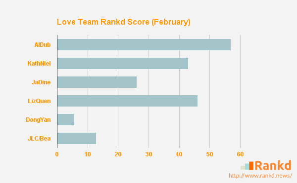
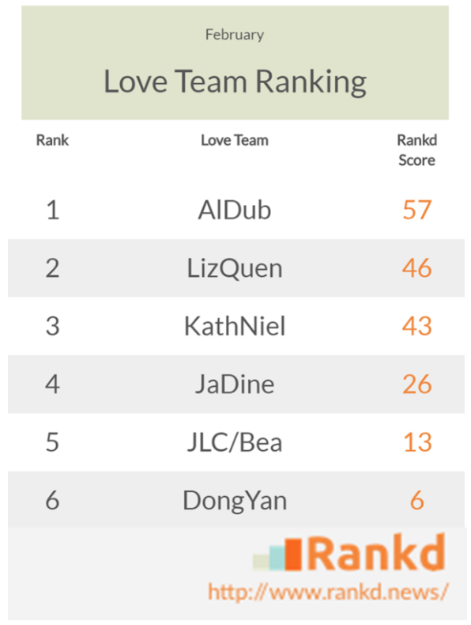

Who is the most popular loveteam in the Philippines for February?
February 2016Cupid might be on the side of your favorite love team this Valentines day, but is statistics also aiming the arrows correctly to your idols to be crowned as the most popular love team in the Philippines this February?
To accurately determine the popularity of the loveteams, Rankd Personalities Analytics (www.rankd.news) collected all the data from top news sources (Inquirer, Philippine Star, Manila Bulletin), social media accounts (Twitter, Instagram, and facebook virality which includes share, comments and likes), and online entertainment news (Rappler, PEP) as its basis for the calculation from February 1-11, 2016.
Rankd Score ™ was then churned out using the algorithm designed to analyse how popular they are online at a given time. This number is then used to rank the love teams.
After some data crunching, their Rankd Score™ revealed that AlDub is still leading among all love teams in terms of popularity, the position they reigned since August 2015 (congratulations!). With new advertisements being lined up for Maine and Alden, and with the backing of brands generating more buzz around them, they will still be talked about and remain in this love team popularity list for some time.
However, we can see that 'Forevermore couple LizQuen is, slowly but surely, edging up in the rankings due to the buzz being generated around their new show 'Dolce Amore'. With the AlDub fever now normalizing after it hit record-breaking levels of media attention, it will be exciting to see how the LizQuen´s drama can challenge their superiority in the next few weeks.
On the other hand, KathNiel, after almost 6 years in showbiz, is staying strong while occupying the third spot. Their increasing Rankd score™ is due to the last few weeks of their hit drama 'Pangako Sa `Yo.' On the other hand, 'On The Wings Of Love' couple JaDine is on the 4th place, but is expected to rise as their show is also entering its final weeks of airing.
Real or not real, BeaLloydie fans are surely keeping the love team alive as the speculations are going on between the two finally getting back together after the recent Bea-Zanjoe and John Lloyd-Angelica breakups. However, we can see that they slid down from top 2 to top 4 this February, as they both kept mum about the issue.
The royal couple DongYan completed the list at top 6, with the latest news now revolves around the upcoming baptism of Maria Letizia.

To analyse how they performed over time, the graph above shows how all the love teams have fared in their popularity game from July 2015 up to present. Rankd Score™ per month shows that AlDub never really left the top 1 position since August, while KathNiel and LizQuen fans has been competing neck and neck for the top 2 and 3 positions since we started measuring last July 2015. BeaLloydie made it back to the spotlight and peaked at number 2 last January due to their blossoming off-screen love story. JaDine fans have recently picked up in their rank score starting January, while DongYan are taking their break while enjoying baby Z's first months together as a family.
For more related news and data analysis on their Facebook virality, followers, and online news mentions, visit www.rankd.news and get updated with who is currently leading the popularity game in the world of showbiz.
What do you think about the ranking of your favourite love team? Which tandem do you think should be number 1?